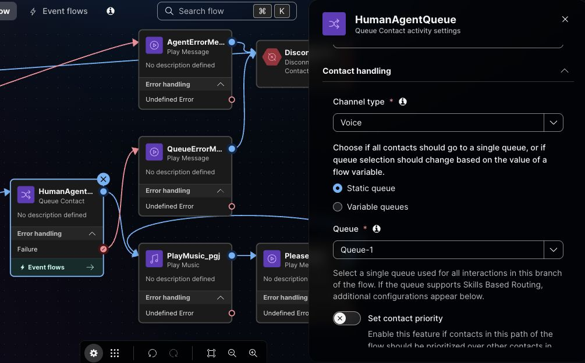
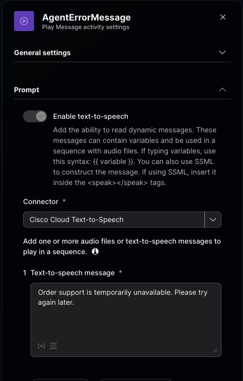
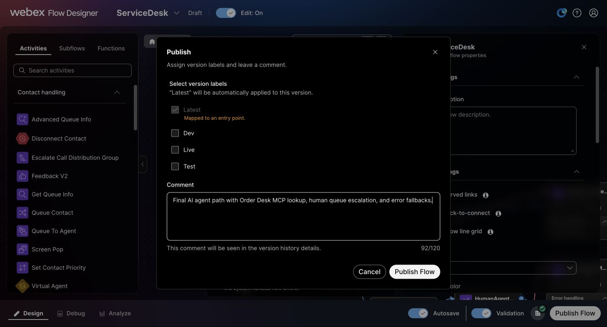
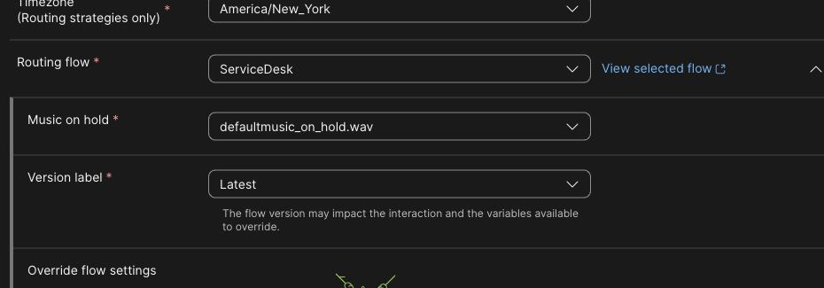

Checkpoint 9: Attach the agent and test end to end
In the reference screenshots, published ServiceDesk version 5 sends callers directly to LAB-21170 Order Support. It passed Validation with 0 errors, and Control Hub routes the active Entry Point-1 to ServiceDesk Latest. Your version number may differ. Verify the order lookup and human queue handoff by phone after publishing your flow.
Before starting, confirm that lookup_order succeeds in AI Agent Studio Preview and the agent shows Published. In Preview, ask for general support, accept the offer of a human agent, and check Sessions for Agent handover. This checks the agent action; the phone test below checks the voice queue. If the MCP action is missing, finish Checkpoint 6 first.
Replace the starter caller path
- Open the
ServiceDeskflow you created in Flow Designer and turn Edit on. If you used a unique lab code, keep selecting that named flow and your own published AI agent in the steps below. - Disconnect
NewContactfromWelcomeMessage. Keep the queue and wait-treatment nodes for reuse. Delete the direct HTTP Request activity so its temporary Authorization header does not remain in the draft. - Find Virtual Agent V2 under Contact handling and drag it onto the canvas.
- Set Activity label to
AIAgent. - Connect
NewContactdirectly toAIAgent. - In the activity settings, set Contact Center AI Config to Webex AI Agent (Autonomous).
- For Virtual agent, select the published
LAB-21170 Order Supportagent. Reopen the activity to confirm both selections saved. - Add a Disconnect Contact activity labeled
DisconnectContact, or reuse one already on your canvas. - Connect the
AIAgentHandled outcome toDisconnectContact. -
Add a Play Message activity and label it
EscalationMessage. Enable text to speech, select Cisco Cloud Text-to-Speech, and enter:I'll connect you with a human agent.Set the escalation prompt before the queue handoff. -
Reuse
QueueContact_4b7if it remains on the canvas. Remove its old incoming links from menu digit2andOrderStatusMessage, rename itHumanAgentQueue, and set Voice → Static queue → Queue-1. ConnectAIAgentEscalated → EscalationMessage → HumanAgentQueue. If the activity is missing, add Queue Contact with those settings. IfQueue-1is unavailable, stop here and check the assigned queue before publishing.
Set HumanAgentQueueto Voice → Static queue → Queue-1. Connect Failure toQueueErrorMessage. -
From
HumanAgentQueue's normal output, connect Play Music (PlayMusic_pgjin this flow), then the Play Message activityPleaseWait. ConnectPleaseWaitback to Play Music so treatment repeats while the caller waits for an agent. -
Reuse
QueueErrorMessageif it is already on the canvas; otherwise add a Play Message activity with that label. Enable text to speech, select Cisco Cloud Text-to-Speech, and enter:I can't connect you to a person right now. Please try again later.Connect the Queue Contact Failure output to this message, then toDisconnectContact.Set the Queue Contact Failure prompt. -
Add another Play Message activity and label it
AgentErrorMessage. Enable text to speech, select Cisco Cloud Text-to-Speech, and enter:Order support is temporarily unavailable. Please try again later.
Set the AI agent Errored prompt. -
Connect the
AIAgentErrored outcome toAgentErrorMessage, then connectAgentErrorMessagetoDisconnectContact. - Remove unused starter IVR and API nodes. Wait for Autosave, turn on Validation, and resolve any errors. Confirm the final canvas has only the connected AI route and 0 errors.
{kind=link}
{kind=link}
{kind=link}
{kind=link}
{kind=link}
LAB-21170 Order Support.{kind=link}
PlayMusic_pgj → PleaseWait → PlayMusic_pgj loop.{kind=link}
{kind=link}
PleaseWait back to Play Music.Before you call
Confirm that your published flow is Latest and Entry Point-1 routes to ServiceDesk Latest. Validation confirms the wiring; the two phone tests below confirm what callers experience.
Publish and test the final caller path
-
Select Publish Flow after validation. In the dialog, Latest is applied automatically; optionally select Test and enter a comment such as
AI agent with human queue. Select Publish Flow, then confirm the new version is Latest in version history.
Check Latest, add an optional label and comment, then select Publish Flow. -
In Control Hub, open the assigned inbound Entry Point from Checkpoint 2 and confirm that Routing flow is
ServiceDeskand Version label isLatest. In Flow Designer version history, confirm that Latest is on your newly published version. If the entry point uses an older fixed label, update the routing assignment before calling.
Set Routing flow to ServiceDeskand Version label toLatest. -
Call the same inbound phone number used in Checkpoints 2 and 3.
- Say:
I need an update on order ORD-10482. - If the agent asks for the order number, provide
ORD-10482. - Confirm that the agent retrieves the order data through the external action and explains the status and delivery information.
- Make a second call and say:
I need general support.When the agent offers a human handoff, say:Yes, please connect me to a human agent.Confirm thatEscalationMessageplays and the call entersQueue-1. If a test agent is available, answer in Agent Desktop. Otherwise, listen for the wait treatment. - In Debug, inspect both Interaction IDs. Confirm the order call reached
AIAgentand the general-support call followedAIAgent → EscalationMessage → HumanAgentQueue. If the caller waited, confirm the trace continued throughPlayMusic/PleaseWait. Test Queue Contact Failure separately only if you can safely create a controlled failure.
{kind=link}
{kind=link}
Compare your order call
For the order call, check Voice Sessions for a successful lookup_order request with orderNumber set to ORD-10482. In Debug, confirm the call reached AIAgent and ended after the answer. The reference captures below show Shipped and September 29, 2026; compare your call with the current Order Desk result. If the agent ends the call, Debug may show Handled → DisconnectContact → ContactEnded.
{kind=link}
{kind=link}
{kind=link}
lookup_order for ORD-10482 successfully. The crop excludes the returned customer details.{kind=link}
{kind=link}
{kind=link}
Compare your general-support call
For the general-support call, accept the human handoff and listen for queue music. In Debug, confirm AIAgent → EscalationMessage → HumanAgentQueue → PlayMusic → PleaseWait. Queue music confirms wait treatment; the trace does not show a human agent answering.
{kind=link}
HumanAgentQueue. Caller and interaction identifiers are excluded.{kind=link}
{kind=link}
{kind=link}
Target caller path:
Caller → ServiceDesk → AIAgent
├─ Order request → lookup_order (MCP) → response → Handled → disconnect
├─ General support → offer human → caller accepts → Escalated
│ → EscalationMessage → Queue-1 → PlayMusic ↔ PleaseWait → human agent
│ └─ Failure → QueueErrorMessage → disconnect
└─ Errored → AgentErrorMessage → disconnect
Check both caller paths
- In Debug, confirm the published flow starts
NewContact → AIAgent. Your final flow no longer contains the Flow DesignerWelcomeMessage, numberedSupportMenu, or direct REST branch. - On the order call, listen for the spoken status and delivery information. In Sessions, confirm the
lookup_orderaction succeeded. - On the general-support call, accept the human offer. Listen for
EscalationMessageand queue treatment, then confirmAIAgent → EscalationMessage → HumanAgentQueuein Debug. An available test agent can answer. - If you test a controlled Queue Contact failure, confirm it reaches
QueueErrorMessageand ends safely. - The Errored branch is connected to
AgentErrorMessage → DisconnectContact; test it only with a controlled agent error.
Before marking this checkpoint complete
Complete both phone calls and inspect their paths in Debug. Confirm the order response and the human queue handoff on your published flow. Test Queue Contact Failure only with a controlled failure.
Optional: explore Contact Center MCP
If your assigned sandbox includes the beta Contact Center MCP services, use the setup guides after completing the phone tests. Connect with the Webex credentials and regional URL supplied for your tenant. The Order Desk bearer is specific to Order Desk.